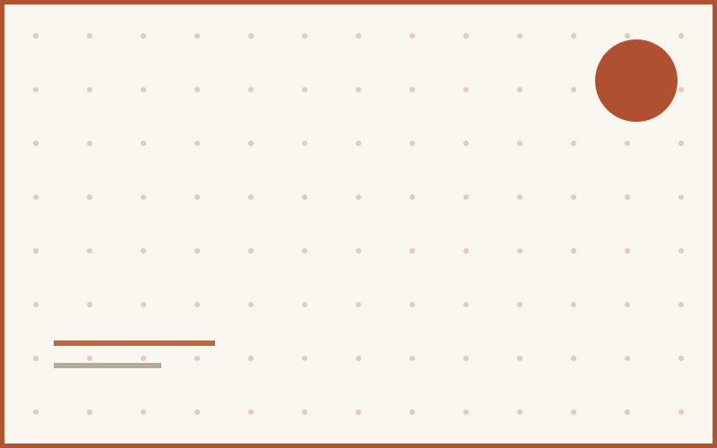

Understanding the Banker's Algorithm, one allocation at a time
A walkthrough of deadlock avoidance using safe-state checking — with the matrix tables that finally made it click.
Read article →The Notebook
Write-ups on operating systems, web development, and the occasional academic detour — sorted newest first.
A walkthrough of deadlock avoidance using safe-state checking — with the matrix tables that finally made it click.
Read article →
Tokens, components, and the handful of decisions that kept this very site's stylesheets from turning into spaghetti.
Read article →
Race conditions, critical sections, and why semaphores clicked for me only after I drew them as traffic lights.
Read article →
How I broke down Silberschatz and Galvin into a two-week revision plan without burning out before the final.
Read article →
A practical rule of thumb for when to reach for Flexbox and when Grid will save you three nested divs.
Read article →
Page tables, TLBs, and the analogy that made address translation finally stick.
Read article →No articles match your search. Try a different keyword or topic.